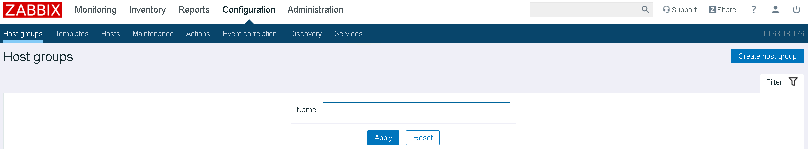

CEPH Nautilus Zabbix module Setup
—
Tech
CEPH可以通过mgr节点的zabbix模块实现监控
不同于普通的agent模式，CEPH自带的zabbix模块通过trapper模式工作，mgr节点收集集群信息并向Zabbix Server发送。
1、环境说明：
3节点CEPH集群，每个node都是mgr节点;
部署Nautilus 14.2.7；
Zabbix Server版本：4.2.1
2、安装部署：
在所有mgr节点上安装zabbix-sender
配置yum：
# rpm -Uvh https://repo.zabbix.com/zabbix/4.4/rhel/7/x86_64/zabbix-release-4.4-1.el7.noarch.rpm
安装sender：
# yum install zabbix-sender -y
3、配置zabbix模块：
在任意一个mgr节点上执行如下配置：
启用zabbix module：
# ceph mgr module enable zabbix
指定zabbix server，如果有多个可以用",“隔开，并且可以添加”:“来指定服务器端口，此处只有最简单的配置：
# ceph zabbix config-set zabbix_host zabbix.test.com
指定zabbix_sender的位置：
# which zabbix_sender
/usr/bin/zabbix_sender
# ceph zabbix config-set zabbix_sender /usr/bin/zabbix_sender
Configuration option zabbix_sender updated
指定identifier，这里很奇怪，只能是某个mgr节点的主机名，其他的可以设置成功但是发送失败，不知道我哪里配的有问题：
# ceph zabbix config-set identifier "ceph01.test.com"
后面如果有需要可以定义server的端口等，命令跟前面的相仿，这里就不配了。
查看一下当前的配置：
# ceph zabbix config-show
查看一下自带的监控模板，后面会用到：
# find / -iname zabbix_template.xml
/usr/share/ceph/mgr/zabbix/zabbix_template.xml
4、配置zabbix server：
登录Zabbix Web UI导入前面找到的监控模板，模板也可以在github中找，默认选项导入即可：

创建主机组：

添加主机并关联主机组和模板，如果有需要主机可以关联多个模板，比如系统的监控：


配置用户告警：


至此配置完成。
5、测试配置
任意一台mgr节点测试：
# ceph zabbix send
Sending data to Zabbix
如果发送不成功会导致ceph健康状态告警，检查端口通信情况及zabbix server的trapper模式是否被禁用，以及上面的步骤是不是哪里配置错了。
https://docs.ceph.com/docs/master/mgr/zabbix/
https://www.cnblogs.com/lbjstill/p/12169820.html